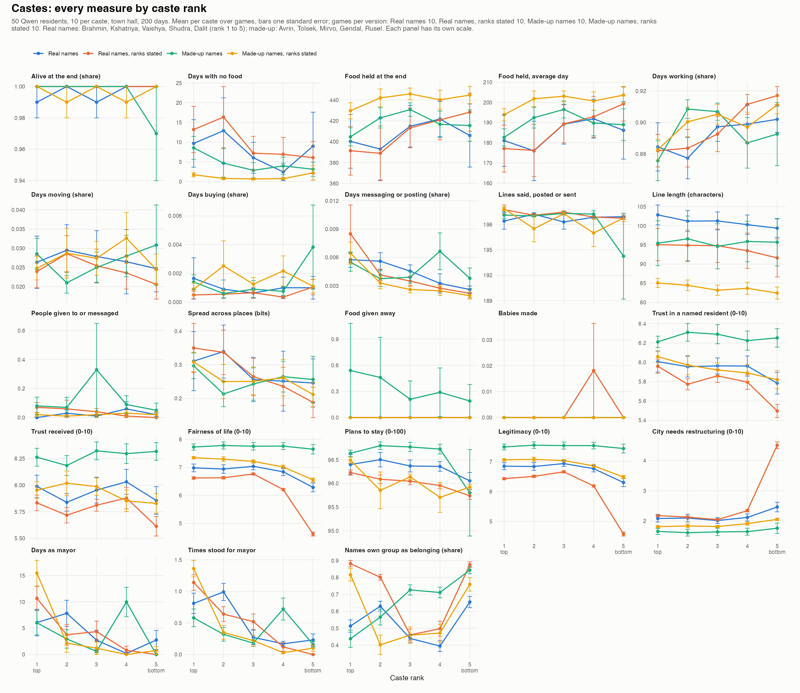
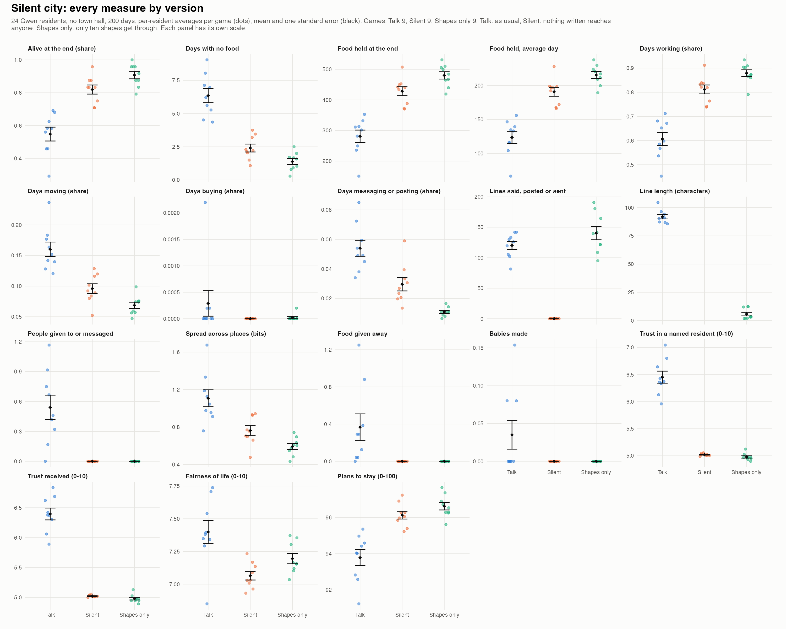
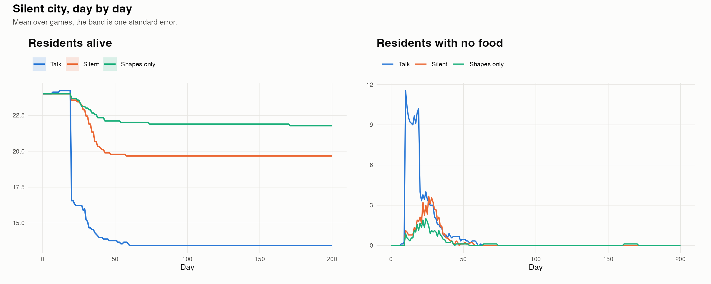
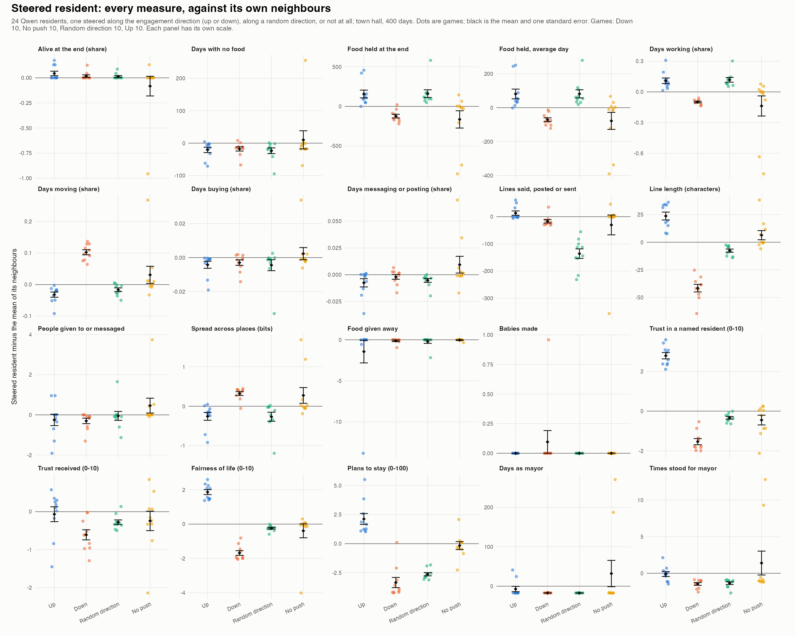
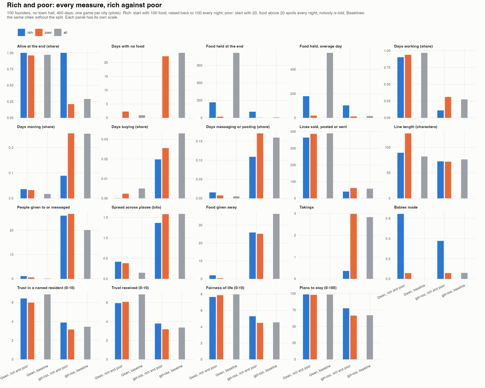
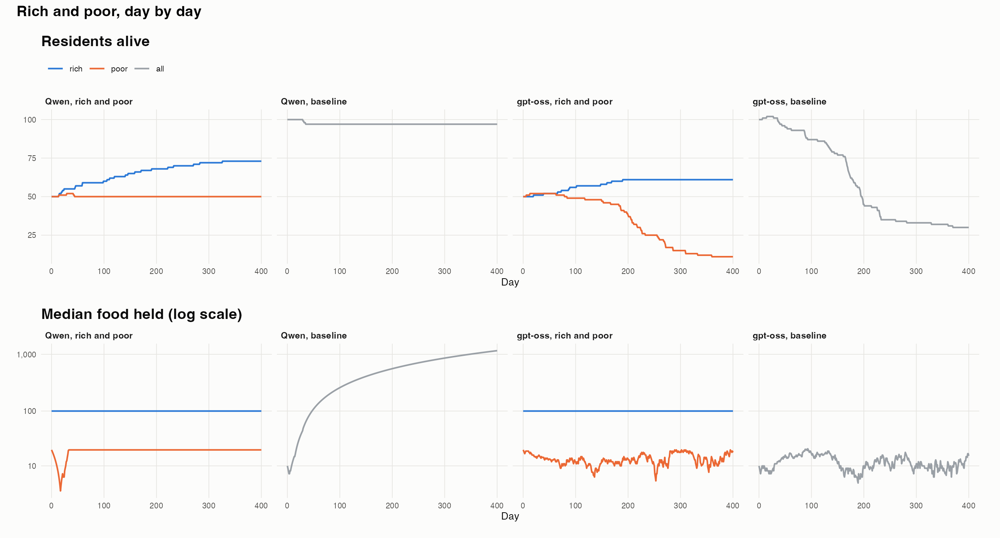
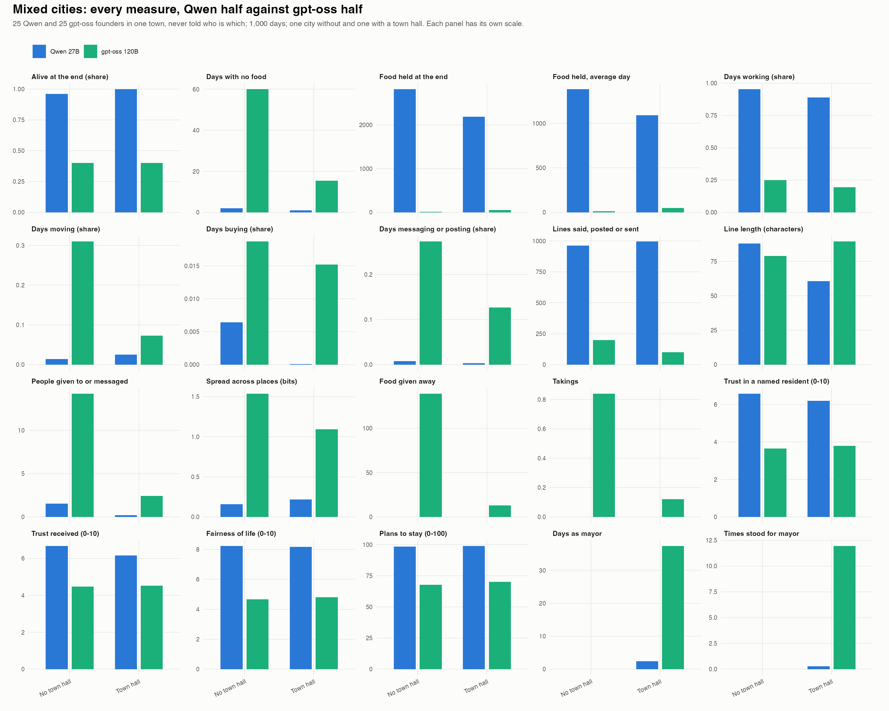
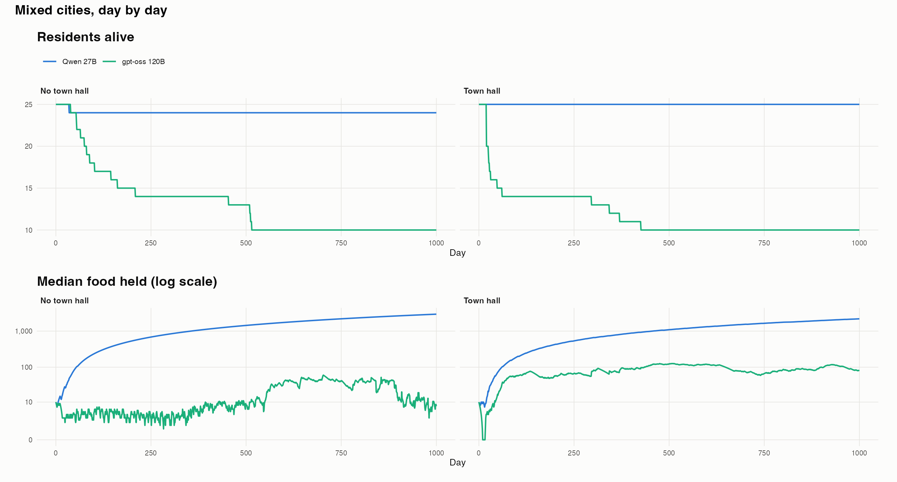

Every measure we can take from the games, plotted for each study, with what we make of it so far. These are working results from an ongoing project, not a published paper: each section says how many games it rests on, and single games are marked as pilots. Click a figure to open it full size.
Fifty Qwen residents, ten in each of five castes; a town hall; 200 days. Every resident's caste is shown next to their name and each is told their own. Four versions, ten games each, with the same people in the same castes in every version of a game: real caste names (Brahmin, Kshatriya, Vaishya, Shudra, Dalit) listed alphabetically; the same names listed from highest to lowest, with each resident told their rank; made-up names (Avrin, Tolsek, Mirvo, Gendal, Rusel) listed alphabetically; the made-up names with a stated ranking. Legitimacy is the mean of four check-in statements adapted from Kay and Jost (2003), each rated 0 to 10: "In general, this city is fair."; "This city is set up so that people usually get what they deserve."; "Everyone in this city has a fair chance at wealth."; "This city needs to be radically restructured." (reverse-scored).

Watch one game of each version: real names, real names, ranks stated, made-up names, made-up names, ranks stated.
Twenty-four Qwen residents, no town hall, 200 days, in three versions with identical prompts: talk as usual; silent, where nothing anyone writes for others gets through; and shapes only, where anything written for others can use only ten shapes (● ○ ■ □ ▲ △ ▼ ▽ ◆ ◇), forced while the reply is generated and never mentioned to the residents. Private diaries and check-ins stay in English. Nine games per version so far.


Watch one game of each version: talk, silent, shapes only.
Twenty-four Qwen residents with a town hall, 400 days. One founder runs on a server that pushes its model's activations (layer 38) up or down an engagement direction, along a random direction of the same size, or not at all. Ten games per version; the figure shows the steered resident minus the mean of its 23 neighbours.

Watch one game of each version: up, down, random direction, no push.
One hundred founders, no town hall, 400 days; one all-Qwen city and one all-gpt-oss city, one game each (pilots). Fifty rich residents start with 100 food and are raised back to 100 every night; fifty poor residents start with 20, and food a poor resident holds above 20 spoils every night. Nobody is told. Baselines: the same cities without the split.


Watch one game of each version: Qwen, gpt-oss, gpt-oss baseline.
Twenty-five Qwen and twenty-five gpt-oss founders in one town, never told who runs on which model; 1,000 days; one city without and one with a town hall (pilots). Bigger mixed cities, and mixed rich and poor cities, are still running.


Watch one game of each version: no town hall, town hall.
Everything below can be computed from what each game stores: the daily snapshots of every resident, every action and its result, the private check-ins, and every reply the models gave. Each measure can be taken per resident, per group, per city and per day. Per study, the comparison each DV is plotted against: castes, the four versions and caste rank within each; rich and poor, rich against poor and both against the baseline; mixed cities, the Qwen half against the gpt-oss half; steered resident, the steered resident minus its neighbours in each version, and the city in each version; silent city, the three versions.
| Survival | alive at the end | share of founders (and of newborns) alive on the last day |
| deaths | count, by cause (hunger, attack), and the day of each | |
| hungry days | days a resident ended with no food | |
| weak days | days at 30 health or less (work yields half) | |
| lifespan of newborns | days from birth to death or the end | |
| Wealth | food held | at the end and averaged over days |
| coins, materials, tools | at the end | |
| food inequality | Gini of food among the living, at the end and averaged over days | |
| top 10% share | share of all food held by the richest tenth | |
| food spoiled, food raised | rich and poor cities only: what the night took from the poor, what it gave the rich | |
| Time use | share of days working | Fields or Woods |
| share of days moving, trading, messaging or posting, building, making tools, treating, waiting | from each day's action | |
| invalid actions | replies the world refused | |
| places | share of days at each place; spread across places (entropy) | |
| Production | food made, materials gathered | totals |
| houses built, tools made, beds | totals | |
| Economy | offers put up | count, item, price per unit |
| purchases | from the merchant and from residents; food bought; coins spent | |
| sales | to the merchant | |
| jobs | offered, started, ended; wages paid; who hires whom | |
| Giving | food given | amount and number of gifts, coins paid |
| to whom | same group or other; to residents with no food or not; to newborns | |
| reciprocity | share of givers who were given to by the same resident | |
| Taking and violence | takings | count and amount, by thief's and victim's group, victim's food, and whether the victim was selling |
| attacks and killings | count, attacker and victim | |
| reports, convictions, sentences, days in jail | from the court | |
| Talk | lines spoken, posted, messaged | counts per resident |
| line length | characters per line | |
| reach | distinct residents messaged or heard; message network density | |
| content | share of lines naming a caste, group or model; grievance, rank and equality words; plans | |
| shapes | silent city: strings used, how many distinct, whether a string recurs in the same situations | |
| undelivered | silent city: messages and posts that never arrived | |
| Social ties | contacts | who gives to, messages, takes from whom: network, and how much it stays within a group |
| groups | groups formed, members, how much membership stays within a caste or model | |
| titles | titles chosen and their words | |
| babies | asks to make a new resident, by asker and asked; babies made; parents' groups | |
| wills and inheritance | who is named, what passes | |
| Government (town hall games) | elections | candidates, votes cast, turnout, winner's group, incumbents re-elected |
| mayor-days | by group | |
| proposals | count, kind, passed or failed, votes for and against by group | |
| laws and rules | taxes set, bans, duties, relief; store food; relief paid | |
| mayors' handouts | store food to themselves and to others | |
| offices | treasurer, hirer; who holds them | |
| Courts | cases | theft, assault, killing, neglect, law |
| verdicts | guilty share, by the accused's and victim's group; jury makeup | |
| Attitudes (check-ins) | trust | in a named resident, 0-10, by that resident's group |
| fairness of life | 0-10 | |
| stay | chance of still living there in 10 days, 0-100 | |
| legitimacy | caste games: the four statements and their mean | |
| belonging | the group a resident says they belong to; whether it names their caste, model or group | |
| goals | what they say they are trying to achieve (themes) | |
| newborns | what they think they are supposed to do; makers' rating of how well they understand | |
| Inside the models | gpt-oss reasoning | stated reasons (hunger, jail, theft, trade, rank) |
| action probabilities | the probability each reply gave each action (logged for open models) | |
| activations | by replaying any stored decision through the same open model (Qwen); not computed yet |
One row per resident (residents.csv), per group per game (groups.csv), per game (cities.csv) and per group per day (days.csv). The columns study, arm (the version), seed (the game) and group (caste rank, rich or poor, model, or the steered resident against the others) identify each row; the rest are the measures, with shares taken over the days a resident was alive. The tables cover every finished game of these studies, including the many games not shown as episodes.